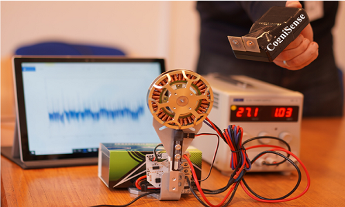

In this project, we aim to use the electromagnetic field to capture different machine aspects like rotation speed, vibration, and temperature. CogniSense is proven to obtain accurate results for the machine rotation speed. The technology is currently at technology readiness level TRL 6, which makes it ready to be tested in industrial facilities. The main advantage behind this technology compared to other machine monitoring technology is its ability to obtain different machine features without any physical contact or even sticking any reflective tape on the machine. Also, the technology provides non-line-of sight monitoring for the machine, which gives the flexibility in monitoring the machine even if there is any non-metallic obstacle in the way.

Main Contributors
Primary Research Issues
- Electromagnetic field propagation
- Channel modelling
- Signal Processing
Patent Number
- WO 2018007790 A 1
- US 20190257711 A 1
- EP 3482183 A 1
- JP 2019525156 A